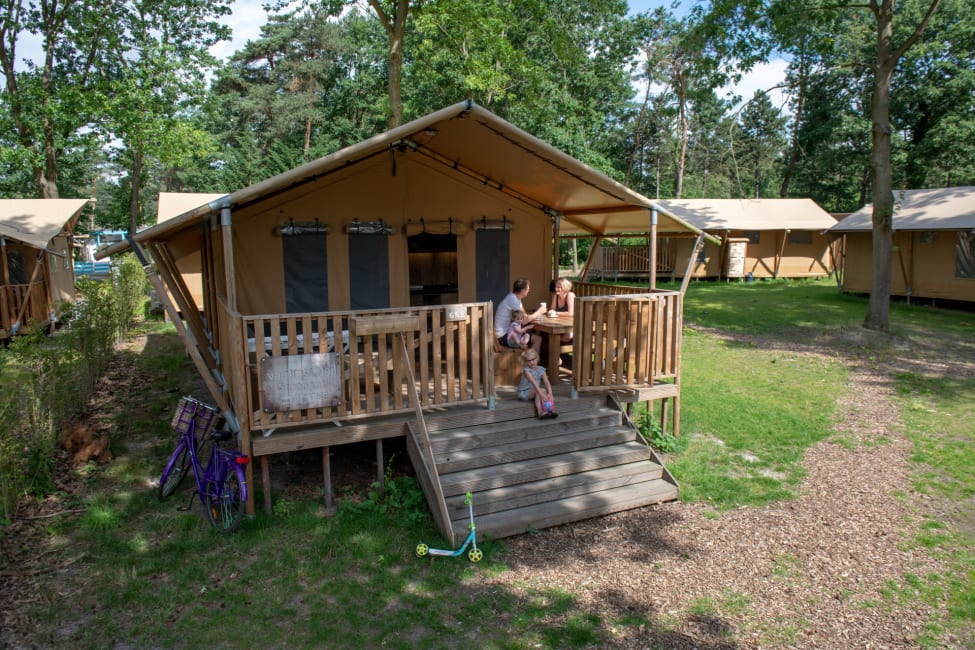
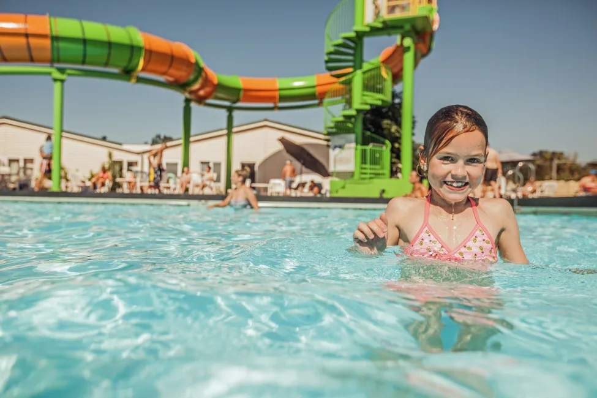
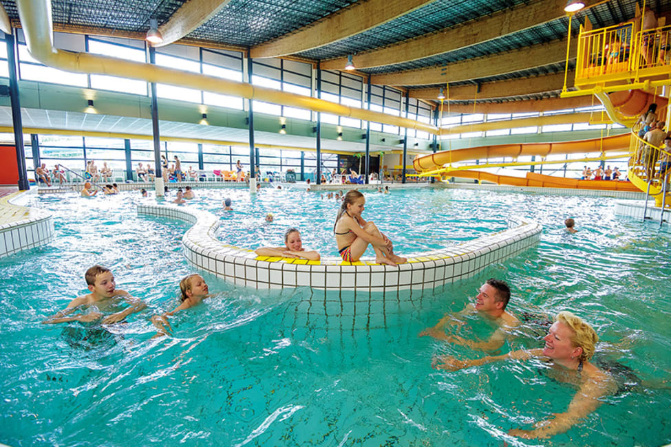
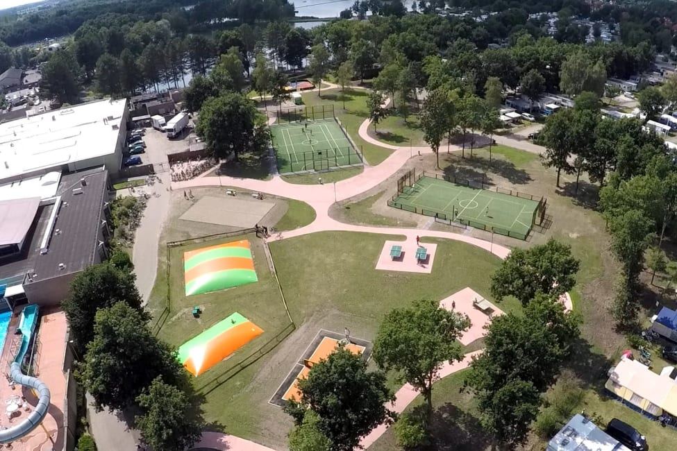

Aankomst
Elders op deze pagina vindt u een checklist voor de inventaris van uw accomodatie. uw accomodatie is met zorg door ons in orde gemaakt. Wij hopen dat u tevreden bent. Mocht er toch iets ontbreken of niet schoon zijn, dan vragen wij u dit direct bij ons te melden, zodat wij ervoor kunnen zorgen dat dit alsnog in orde wordt gemaakt
We zijn er voor u
Onze receptietijden zijn doorgaands 's ochtends van 9.30 tot 10.00 en 's avonds van 17:00 tot 17:30. Buiten deze tijden kunt u altijd binnen in de receptie een bericht voor ons achterlaten. Bij urgente zaken kunt u ons bellen op het noodnummer tussen 8.00 en 22.00. Na 10 uur 's avonds kunnen we wegens veiligheidsredenen geen stroomstoringen verhelpen of gasflessen vervangen.
Veiligheid
We vragen u rekening te houden met het volgende
- De gasinstallaties van alle stacaravans worden elk jaar volgens de ter plaatse geldende wettelijke voorschriften gecontroleerd. Dit geldt ook voor de airconditioning units in alle stacaravans.
- Alle stacaravans zijn uitgerust met een rookmelder. Deze is voor uw aankomst gecontroleerd. Als de batterij van de rookmelder leeg raakt, hoort u een piepsignaal. Wilt u dit melden bij onze medewerkers zodat zij de batterijen voor u kunnen vervangen.
- Pas op met open vuur, kaarsen en barbecue. Niet op alle campings is het toegestaan om te barbecueën. Wanneer u wel mag barbecueën is het raadzaam om de nodige voorzorgsmaatregelen te nemen. Denk hierbij aan dichtstbijzijnde brandblusser, evacuatieplan camping, emmer water naast de barbecue, blusdeken. Verblijft u in een stacaravan met een houten veranda, dan is het niet toegestaan open vuur en /of barbecue te gebruiken op deze veranda. Wees in alle gevallen alert en voorkom brandgevaar.
- Wanneer u een skottelbraai of gas barbecue gebruikt, gebruik daarvoor dan niet de gasfles van uw accommodatie.
- De kachel/radiator van uw stacaravan mag alleen door een volwassene aangezet worden. De kachel/radiator kan heet worden en blijft nog enige tijd warm wanneer deze is uitgezet. Houdt kinderen altijd op veilige afstand. Het is niet toegestaan om handdoeken, theedoeken en andere voorwerpen over de kachel/radiatoren te hangen. Wij verzoeken u ook om geen voorwerpen tegen de kachel/radiatoren te plaatsen.
- Het is niet toegestaan om de instellingen van de geiser in uw stacaravan aan te passen. Onze medewerkers ter plaatse helpen u graag verder.
- Wij raden u aan geen waardevolle spullen achter te laten in uw accommodatie. Op veel campings zijn kluisjes te huur. Mocht u te maken krijgen met verlies of diefstal, dan kunt u dit het beste direct bij de politie melden. Zij maken dan een verklaring voor u. Deze verklaring kunt u dan aan uw verzekeringsmaatschappij overhandigen. Denkt u er ook aan om de ramen van uw stacaravan te sluiten als u weggaat.
- Het gasfornuis in de tent dient niet verzet te worden.
- Er is in onze receptietent een EHBO-koffer te vinden.
- Ook is in al onze accommodaties een blusdeken aanwezig. Wilt u onze medewerker op de hoogte stellen als deze is gebruikt.
Schade aan de accomodatie en inventaris
We vragen u schade en vermissingen aan ons te melden. Kleine schades, zoals een gebroken bord of glas, kunt u gewoon bij ons melden zodat de materialenv ervangen kunnen worden. Wanneer het een grotere schade betreft, meldt u dit dan alsublieft net zo goed. Mogelijk kan de schade dan al voor uw vertrek gerepareerd worden en kan daarmee vervolgschade worden voorkomen. Dit is zowel voor u als voor ons wel zo prettig.

Bezienswaardigheden in de omgeving
In de omgeving is van alles te zien en te beleven. Graag wijzen we u op het Fun en Entertainment centrum dat bij de Schatberg hoort. Daarnaast kunt u denken aan de volgende uitstapjes:
- Dichtstbijzijnde stad is Venlo - een leuke, eeuwenoude stad aan de Maas met een gezellig centrum. Ook Roermond, Weert en zelfs Eindhoven liggen nabij voor een dagje shoppen.
- Wandelen in de Limburgse natuur? Bezoek Nationaal Park De Groote Peel. Heerlijk voor jezelf én uw kids. Tijdens de wandelroutes komt u namelijk ook langs speelplekjes en spannende uitkijktorens. Tip: vraag naar het opdrachtenboekje voor kinderen bij het bezoekerscentrum!
- Leuke uitstapjes in de directe omgeving van de camping zijn die naar streekboerderij De Locht (met het champignon- en aspergemuseum) en de Oudheidskamer in Horst.
- In Arcen treft u de mooie kasteeltuinen van Arcen, de Hertog-Jan Bierbrouwerij, Graanbranderij De IJsvogel en Thermaalbad Arcen.
- Voor de kinderen is het Toverland attractiepark in Sevenum een aanrader!
- Zin in een dagje cultuursnuiven? Ontdek kasteel De Keverberg in Kessel en duik in het Limburgs Museum in Venlo.
In onze receptie bevindt zich een wand met foldertjes. We informeren u graag verder.
Duurzaam toerisme
Vacansoleil zet zich in voor duurzaam toerisme. Dit houdt in dat er met reizen rekening gehouden wordt met milieu, mensen, natuur en cultuur, zodat ook aan de volgende generaties aantrekkelijke bestemmingen kunnen worden aangeboden.
Op deze camping is het mogelijk om glas en papier apart in te zamelen. Blik en plastic mag bij het algemene afval, dit wordt bij de afvalcentrale gescheiden.
Noodgedwongen eerder vetrekken of verlengen
Wanneer u onverhoopt vroeger moet vertrekken dan voorzien in verband met een noodsituatie, kunt u bij ons een verklaring krijgen dat u in verband met die situatie eerder bent vetrooken. In veel geval zal uw reis- of annuleringsverzekering daarnaar vragen wanneer u de niet-genoten vakantienachten wilt claimen. Ook wanneer u uw verblijf moet verlengen in verband met bijvoorbeeld een ziekenhuisopname kunt u een dergelijke verklaring krijgen.
Boeking ter plaatse
Als het einde van de vakantie te snel nadert en u wilt dit nog even uitstellen kunt u bij ons navragen of er een mogelijkheid is om uw verblijf ter plaatse nog te verlengen.
Vertrek
U heeft betaalt voor schoonmaak. We vragen u echter het volgende:
- De keukenitems schoon en droog terug te zetten/leggen (zoveel mogelijk op de oorspronkelijke plaats)
- Het afval weg te brengen. De milieustraat bevindt zich als u vlak voor de slagboom naar rechts gaat
- De accomodatie in ordelijke staat te brengen (veegschoon).
U kunt vertrekken tussen 8.00 en 10.00. Meldt u de gewenste vertrektijd uiterlijk de dag voor vetrek bij onze Vacansoleil receptie. Bij het uitchecken lopen we samen met u de accomodatie door waarna wij de machting vernietigen indien alles in orde is. Indien u bedlinnen gehuurd heeft verzoeken wij u dit te verzamelen en in het zitgedeelte te leggen. We vragen u om nat of vochtig linnen of handdoeken gescheiden te houden van de droge artikelen
Een dag eerder of voor 8.00 vertrekken is natuurlijk ook mogelijk. We controleren dan na uw vetrek en zullen de machtiging vernietigen de accomodatie in orde is. Mocht dit niet het geval zijn, zijn we genoodzaakt de borg van uw rekening te incasseren met de machtiging die u getekend heeft. Houdt u er rekening mee dat de slagboom gesloten is van 23:00u in de avond tot 7:00u in de ochtend.
Tot slot
We hopen dat u een prettige vakantie heeft op onze camping.
Wilt u volgend jaar weer op vakantie met Vacansoleil, dan is reserrveren nu al mogelijk. U kunt een geheel vrijblijvende vroegboeking bij ons indienen
Natuurlijk houdt Vacansoleil u graag op de hoogte van acties en nieuwtjes door middel van een nieuwsbrief die per e-mail wordt verzonden, Wanneer u deze wenst te ontvangen kunt u uw e-mail adres achterlaten bij onze Vacansoleil receptie. We nodigen u van harte uit om ons te volgen op de verschillende sociale media.

Supermarkten in de buurt
Supermarkten in Sevenum
- Jumbo
Horsterweg 64
5975 NB Sevenum
- Aldi
Raadhuisplein 4
5975 BK Sevenum
- Jan Linders
Pastoor Vullinghsstraat 5
5975 AP Sevenum
Supermarkten in Panningen
- Lidl
Pastoor Huijbenplein 19
5981 BH Panningen
- Jan Linders
Kepringelehof 3
5981 CP Panningen
- Jumbo
Kerkstraat 43
5981 CD Panninge
Weekmarkten en koopavonden
Dinsdag
|
| Eindhoven |
Binnenstad
|
10.00-17.00 uur |
| Horst |
Wilhelminaplein
|
09.00-12.00 uur |
Woensdag
|
| Asten |
Markt
|
09.00-12.00 uur (alleen oneven weken) |
| Eindhoven |
Woensel
|
09.00-12.00 uur |
| Panningen |
Raadhuisplein
|
09.00-16.00 uur |
Donderdag
|
| Boxmeer |
Raadhuisplein
|
13.00-16.30 uur |
Vrijdag
|
| Deurne |
Markt
|
13.00-17.00 uur |
| Blerick |
Kloosterstraat
|
13.00-18.00 uur |
Zaterdag
|
| Eindhoven |
Woensel
|
10.00-17.00 uur |
| Venlo |
Mgr. Nolensplein
|
09.00-13.00 uur |
Koopavonden
Donderdag
Vrijdag
- Eindhoven
- Panningen
- Horst
- Sevenum
- Venray

Noodgevallen
In noodgevallen belt u 112. Belt u in dat geval ook het noodnummer van de camping +31(0)77 467 77 00 zodat eventuele hulpdiensten bij de ingang worden opgevangen en naar uw accomadatie begeleid worden. Ook is er op De Schatberg een AED-apparaat aanwezig. De EHBO'ers zijn getraind om dit apparaat te bedienen.
Telefoonnummer receptie Schatberg: +31(0)77 467 77 77.
Noodnummer Camping: +31(0)77 467 77 00. We verzoeken het noodnummer alleen te bellen in geval van nood of zeer dringende gevallen. Een stroomstoring is bijvoorbeeld geen noodgeval.
Huisartsen
Huisarstenprakijk Kronenberg
Meerweg 9a
Kronenberg
+31 (0)77 467 28 29
Huisartsenpraktijk de Brink
Sondertseveld 4
Sevenum
+31 (0)77 467 38 68
Huisartenpost
Tussen 17.00 uur 's avonds en 8.00 uur 's morgens en in het weekend kunt u de huisartsenpost Venray of Venlo bellen. Dit kan op telefoonnummer: 0900-8818.
Let op: alleen na telefonische afspraak.
Voor Belgische gasten telefoonnummer: +31 (0)77 3203 758
Huisartsenpost Venray
Leunseweg 20 (Wieënhof)
5802 EZ Venray
Let op, alleen huisartsenpost géén EHBO in Venray.
Huisartsenpost Venlo
Prof. Gelissensingel 20
5912 JX Venlo
Ziekenhuis Venlo
Tegelseweg 210, 5912 BL Venlo
Tandartsen
Dhr. Deckers
Sondertseveld 2
5975 TP Sevenum
+31 (0)77 457 33 14
Tandunique Sevenum
Peperstraat 43
5975 BT Sevenum
+31 (0)77 467 20 97
Tandartsenpost
Tussen 17.00 uur 's avonds en 8.00 uur 's morgens en in het weekend kunt u de tandartsenpost Venlo bellen.
Dit kan op telefoonnummer: 0900-8818.
Let op: alleen na telefonische afspraak.
Tandartsenpost Venlo
Prof. Gelissensingel 20
5912 JX Venlo
Apotheek
Medsen apotheek
Pastoor Vullinghsstraat 12
5975 AP Sevenum
Tel +31 (0)77-4673179
Fax +31 (0)77 467 81 22 (algemeen faxnummer +31 (0)20 753 70 90)
Geopend van maandag t/m vrijdag 08.30 - 17.30 uur.
Buiten deze openingstijden zijn de regionale dienstapotheken in Venray en Venlo geopend.
Voor spoedgevallen op recept +31 (0)478 584 877.
